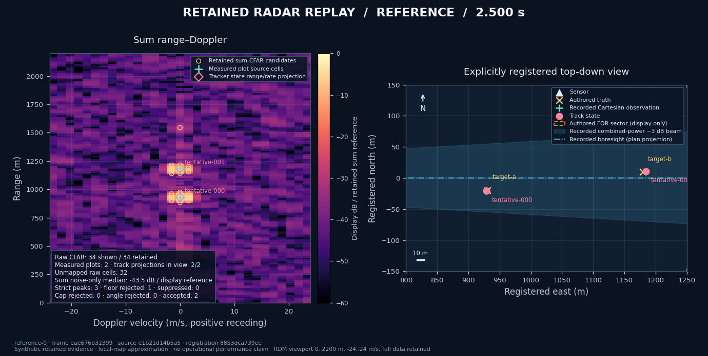

SENSOR SCENARIO STUDIO · RECORDED WORKBENCH REPLAY
Recorded radar replay
Step through four captures from a completed 20-second Workbench HDF5 recording (2.5, 7.5, 12.5 and 17.5 seconds) of two fictional crossing targets. Compare scene truth, recorded radar observations and Kalman tracker estimates on the same clock.
Capture time
Recorded Workbench runLoading recording…

Left pane: retained Sum range-Doppler map (Doppler velocity across horizontal X, range increasing upward on Y). Right pane: registered East-North scene truth, CFAR observations and tracker estimates. Plots were rendered from retained HDF5 arrays at export time; select the plot to open full resolution.
Recording provenance & digests
These displays come from a verified synthetic HDF5 recording (website-fictional-crossing-v1). Frame selection changes the retained capture being displayed.
- Evidence kind
recorded-workbench- Radar source HEAD
ccf3d2898bbf5f04747945d13189e9151c252d6b- Python source SHA-256
3b9aeda78d4e41ad83c3ad5ee2a8d48d41a1289b44eeb2c9da1fb322477ecc40- Session manifest SHA-256
bac31a507a41eb0526637fcc0910e72357f3836194156bdae57ef6bbb5f4f470- Scientific digest
884928460cae4b5e7ed3eb2abed77c4a106ae8c223f500fe90d554eb5e943733- Active frame digest
e1b21d14b5a54d699949b1c176930f9d18674fecc6716a4d81a75d758c2292bc
Frame times and source digests · Source receipt · Rights & sources ledger · Bundle manifest